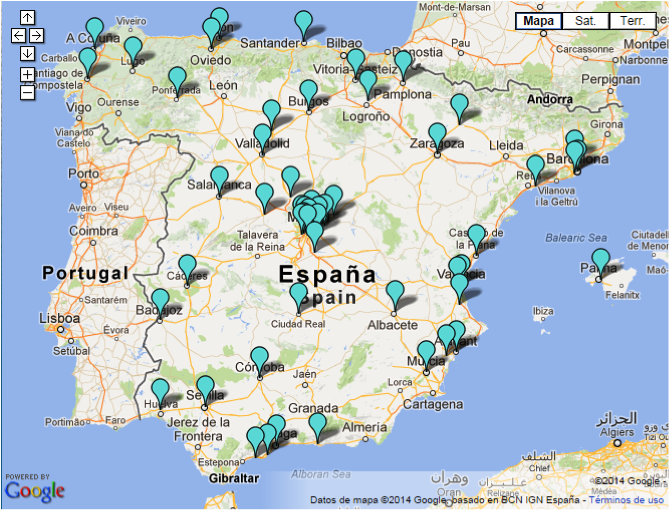

Antecedentes
En este apartado se habla del estado del arte de las Smart Cities y del proyecto SmartSantander en concreto, desde el cual se recogen los datos de los sensores de la ciudad de Santander, y que se utilizan como fuentes de información para su posterior tratamiento en la arquitectura Big Data desarrollada.
Smart City
Existen varias definiciones de lo que significa una Smart City, aunque todas concluyen en que es el empleo de las Tecnologías de la Información y de la Comunicación, conocidas como TIC, para ofrecer servicios de información a nivel de zona urbana que permitan una mejora de ciertos elementos característicos de una ciudad, como pueden ser los servicios públicos, la sostenibilidad o la eficiencia de uso de sus recursos; e incluso suponer un impulso económico importante para la ciudad.
Este término se ha llevado usando desde hace más de veinte años. Comenzó usándose con fines energéticos: monitorizar ciertos elementos que permitan optimizar el consumo de energía de una ciudad y conseguir un ahorro económico y una mejora en su sostenibilidad (1).
Pero con el paso de los años se han comenzado a utilizar las TIC para otros fines, como son ayudas para mejorar el transporte y en el tráfico de vehículos en las ciudades, optimización de sistemas de climatización, construcción de edificios sostenibles, gobernanza y gestión de administraciones…
Telefónica (1) describe las Smart Cities como aquellas ciudades que utilizan las TIC para dotar a sus infraestructuras de herramientas que permitan la interacción del ciudadano con los elementos urbanos. La considera como una plataforma en la que muchos agentes de distintos tipos pueden interactuar con conjuntos de sensores de medición y ofrecer mejoras en servicios gracias al procesamiento de la información recopilada.
En otro informe elaborado por el Centre of Regional Science de Viena (2) realiza una división de los problemas que puede abarcar una Smart City en seis grupos principales:
- Smart Economy: Abordan problemas de mejora de productividad que permiten aumentar la competitividad de las ciudades en cuanto al tema económico se refiere.
- Smart Governance: Solucionan problemas relacionados con servicios a ciudadanos, funcionamiento de administraciones y participación política.
- Smart Environment: Aborda los estudios de las condiciones naturales de una ciudad, midiendo aspectos medioambientales como el clima o la polución.
- Smart People: Cuando se emplean las TIC para desarrollar servicios de interacción social de los ciudadanos, así como las mejoras en servicios educativos.
- Smart Mobility: Permiten mejorar las redes de transporte de las ciudades, ofreciendo un servicio inteligente de información de tráfico con el que se pueda controlar eficientemente el flujo de vehículos por la zona urbana.
- Smart Living: Engloba problemas relacionados con varios aspectos de la calidad de vida, como la cultura, salud, seguridad, turismo, etc…
Varios estudios concluyen que en los próximos años el número de personas que vivirán en zonas urbanas crecerá considerablemente, por lo que la optimización de recursos de las ciudades resulta un problema que se ha de resolver con la mayor eficacia posible. El uso de las TIC y la conversión de las ciudades en Smart Cities puede ser la clave para conseguir dichas mejoras y hacer posible la convivencia de una población mayor a la actual en espacios urbanos, siempre que estos alcancen un nivel de eficiencia y sostenibilidad suficiente.
Smart Cities en España
España es un país que ha invertido enormemente en el uso de energías renovables y en desarrollo sostenible. De hecho, actualmente, las energías renovables cubren en torno al 14% del consumo total del país (3), y tiene un plan de crecimiento de su uso en el que se ha marcado como objetivo cubrir el 20% para el año 2020.
Para el uso eficiente de esta energía generada en espacios urbanos, es esencial la transformación de ciudades en Smart Cities, y en España también hay una fuerte inversión en el uso de las TIC (4). Existen más de 50 ciudades que conforman una red española de ciudades inteligentes llamadas RECI, con el objetivo de, además de aprovechar al máximo los recursos energéticos, mejorar los servicios de estas ciudades y reducir el gasto público, generando así progreso y atrayendo actividad económica.
La Red Española de Ciudades Inteligentes (5) divide sus actividades en cinco grupos de trabajo, según el objetivo de las TIC implantadas:
- Innovación Social: Trata mejoras en accesibilidad, cultura, participación ciudadana, salud, seguridad y emergencias, turismo y ocio, educación y gobierno abierto y open data.
- Energía: Alberga problemas de información ciudadana sobre eficiencia energética y de instalaciones de energías renovables, alumbrado público y edificios “smart spaceâ€�.
- Medio Ambiente, Infraestructuras y Habitabilidad Urbana: Para temas de calidad ambiental, sostenibilidad de edificios e infraestructuras públicas, gestión de parques y jardines públicos, recogida de residuos, medición de parámetros ambientales y urbanismo.
- Movilidad urbana: Con sistemas inteligentes de transportes y movilidad eléctrica.
- Gobierno, Economía y Negocios: Que trata temas de administración electrónica, nuevos modelos de negocio, empleo, comercio electrónico, CPDs virtuales y entornos cloud.
El proyecto Smart Santander
Smart Santander (6) es una iniciativa para crear un banco de experimentos o testbed en el que se puedan desarrollar y probar aplicaciones y servicios para smart cities. Ofrece una interfaz de acceso a los datos que generan unos 20.000 sensores colocados a lo largo de las ciudades de Belgrado (Serbia), Guildford (Inglaterra), Lübeck (Alemania) y Santander (España, con 12.000 sensores) que recogen medidas relacionadas con la movilidad urbana y el medio ambiente.

La arquitectura del testbed comienza con la colocación de una red de sensores y repetidores a lo largo de la ciudad, llamados nodos IoT, los cuales leen o repiten los parámetros que generan los sensores utilizando el protocolo 802.15.4 de comunicación de dispositivos de bajo consumo.
La información generada se envía a varios gateways que funcionan a modo de puerta de comunicación entre la infraestructura de sensores y los servidores centrales a los que se conectan los diferentes clientes a través de varias capas de servicios que se ofrecen: Autenticación, soporte de experimentos, gestión del testbed y soporte de aplicaciones.
Actualmente existen varios experimentos que utilizan el testbed de SmartSantander como fuente de datos para probar las aplicaciones y herramientas que desarrollan. Entre ellos destacan los siguientes:
- Mitos: Aplicación para generar mapas de rutas entre varios puntos. Utiliza los datos de SmartSantander para añadir también información en tiempo real de tráfico, aparcamientos y ruido. Ofrece también un sistema de predicción de la mejor zona para aparcar en el momento.
- Smart Travel: Utilizando los datos de tráfico de SmartSantander, realiza una estimación con un modelo de flujo de tráfico e informa de posibles puntos de congestión, para que el usuario pueda elegir la ruta más eficiente hacia su destino.
- InterDataNet: Este experimento consiste en la elaboración de una herramienta web para la monitorización de todos los sensores de la infraestructura IoT, mostrando las medidas de cada uno en un mapa de la ciudad.
- SEN2SOC: Pretende desarrollar una aplicación móvil en la que los usuarios puedan visualizar información y alertas sobre los datos leídos por los sensores, así como eventos sociales de la ciudad recogidos mediante un análisis de la información de redes sociales.
Desarrollo
A continuación se describe el proceso de desarrollo seguido para la elaboración de la arquitectura Big Data del proyecto. Se comienza con una visión global del producto que se desea construir, para posteriormente ir desgranando en detalle cada uno de los elementos desarrollados y terminar finalmente con la visualización final de datos diseñada.
Objetivos del proyecto
El proyecto consiste en realizar un nuevo experimento con el testbed del proyecto SmartSantander, que recoja los datos que genera la infraestructura de sensores que compone la Smart City.
Se desea utilizar tecnología Big Data para tratar toda esa información y generar varios análisis avanzados de los datos recolectados. Punto por punto, cada uno de los objetivos del proyecto son los que se describen a continuación:
- OBJ-01. En primer lugar, se realizará una visualización de información agregada de las diferentes medidas de los sensores en un mapa web. Este mapa debe ofrecer los distintos puntos donde se colocan los sensores, mostrando las medidas promedio en un intervalo de tiempo específico seleccionado por el usuario para una magnitud también elegida. En principio, se utilizará el cuarto de hora como intervalo de agregación de datos.
- OBJ-02. Esta información se desea tener accesible lo más rápido posible, por lo que también se desea construir un proceso en tiempo real que vaya calculando los agregados de los intervalos temporales actuales, así como que se ofrezcan lo más rápidamente posible a través de la interfaz web.
- OBJ-03. En segundo lugar, se desea realizar algún tipo de análisis estadístico avanzado de la información. Se va a diseñar un algoritmo de clustering que clasifique los días según el comportamiento de una de sus medidas, concretamente la temperatura. Se debe construir además una interfaz web intuitiva con la que se puedan explorar los resultados de cada uno de los grupos generados, así como poder compararlos con las medidas de los días que hayan entrado en el proceso de cálculo.
- OBJ-04. Al ser un proyecto Big Data, se desea también que los procesos de cálculo, almacenamiento y análisis de la información sean escalables, de manera que se elija la tecnología que mejor se adapte a cada una de las partes de la arquitectura que se diseñe y se construya.
- OBJ-05. Finalmente, se prefiere utilizar herramientas de Big Data de uso en la actualidad y que no se hayan impartido en clase, con el fin de completar los conocimientos adquiridos con experiencia en otras tecnologías emergentes; como por ejemplo utilizar Apache Spark para procesamiento offline de la información.
Arquitectura de la solución
Para diseñar la arquitectura Big Data de la solución, es necesario primero ir punto por punto de los objetivos y definir para cada uno de ellos las herramientas tecnológicas ideales para desarrollar dichas tareas.
Todos los objetivos anteriores requieren obtener previamente los datos emitidos por la arquitectura IoT del testbed de Santander, por lo que habrá que añadir un objetivo secundario que comprende la adquisición y almacenamiento de datos emitidos por los sensores. Para esta primera tarea de adquisición, es conveniente elaborar un estudio inicial de la información a recopilar. Se partirá de una interfaz web que ya ofrece el equipo de SmartSantander en su página web con un mapa con los datos actuales de cada uno de los sensores, en cada una de las magnitudes que miden.

Para ayudar en la inserción, se desarrollará un proceso que leerá cada cierto tiempo los datos de la web y los almacenará.
Este almacén de datos debe ser leído posteriormente por un proceso que distribuya la información en un sistema de ficheros HDFS. Para llevar esa tarea, se almacenarán las lecturas en una cola Apache Kafka, ya que es una herramienta escalable que permite llevar un offset del mensaje que cada uno de los consumidores va leyendo, permitiendo interrumpir y continuar la carga donde se dejó la última vez. Dicho consumidor será un agente Flume, que lea los mensajes, les pueda aplicar un tratamiento de limpieza y almacene finalmente las lecturas de manera distribuida y preparada para su acceso posterior por parte de cada una de las herramientas que se tengan que construir en cada uno de los objetivos indicados.
Para el objetivo OBJ-01 referente a la visualización de las medidas agregadas de cada uno de los sensores por cada cuarto de hora, se necesitará realizar un proceso offline de tratamiento de datos que agregue y almacene de manera accesible por la web la información de las lecturas de datos. Para ello se construirá un job utilizando Apache Spark que lea los ficheros del HDFS y agregue la información para posteriormente almacenarla en una base de datos columnar que agilice el acceso a los datos desde la interfaz web. La base de datos elegida es Cassandra, que aporta unos tiempos de escritura bastante rápidos y permite la escalabilidad sin tener un punto único de fallo. Para acceder a esta base de datos por parte de la interfaz web, se construirá una API REST utilizando Spring que reciba las peticiones de los usuarios y acceda a la base de datos de Cassandra, que tendrá una tabla optimizada para cada una de las querys que la web necesite. La interfaz web se implementará utilizando ExtJS, junto con componentes HTML5 y JQuery que mostrarán los datos.
En cuanto al objetivo OBJ-02, en el que se pretende acceder en tiempo real al valor agregado actual de los datos de los sensores, se construirá una topología con Apache Storm que acceda directamente a la cola Kafka de recepción de los mensajes, limpie la información, la agregue en el cuarto de hora actual y la almacene en la misma tabla de la base de datos Cassandra donde la almacena el proceso batch descrito anteriormente. Ambos procesos convivirían siguiendo el patrón de arquitecturas lambda para el procesamiento offline y online de la información de un sistema Big Data.
Para realizar el objetivo OBJ-03, el desarrollo de un algoritmo de clustering que clasifique días en base a alguna de las magnitudes, se creará un nuevo job con Spark que recoja y agregue la información para después pasarla a un clúster K-Means utilizando la librería MLLib que implementa este mismo algoritmo de manera distribuida y escalable. El resultado de la ejecución se almacenará también en la misma base de datos Cassandra para que sea accesible a través de la API REST. Para determinar el número de grupos óptimo, se realizará previamente un estudio, observando la variación de la suma de errores cuadráticos en cada uno de los k valores posibles. La visualización de la información se realizará con una nueva webapp utilizando ExtJS que ataque a la API REST, al igual que en el OBJ-01.
Todos los componentes descritos anteriormente conforman la arquitectura de la solución. En resumen, estos componentes son:
- Una aplicación de web scrapping que recoja las fuentes
- Una cola Kafka que reciba y almacene temporalmente las fuentes recibidas desde el web scrapper.
- Un agente Flume que lea de la cola Kafka, realice un proceso de limpieza de la información y almacene los datos de manera distribuida.
- Un sistema de ficheros HDFS que recibe los datos del agente Flume.
Un servidor Spark que se encargue del procesamiento batch, a priori de dos jobs:
- Un job encargado de la agregación de la información.
- Un job que con MLLib calcule un algoritmo de clustering con los datos de una de las medidas.
- Un servicio Storm que lea de la cola Kafka utilizando otro consumidor que no sea el del proceso Flume y que agregue la información de las mediciones actuales de los sensores.
- Una base de datos Cassandra que almacene los resultados tanto de los jobs del servidor Spark como de la topología del servicio Storm.
- Una API REST hecha con Spring que sirva de interfaz entre peticiones de datos de usuarios externos y la base de datos Cassandra con los resultados de los procesos online y offline.
Un servidor Apache Tomcat de aplicaciones web en el que se publicarán dos páginas de visualización de datos:
- Una página que dibuje en un mapa los datos de los sensores por cada medida y agregación temporal calculada.
- Una página que muestre y permita interactuar con los resultados de la ejecución del algoritmo de clustering.
En resumen, la arquitectura software que se pretende construir presenta el siguiente esquema:

Diseño de los elementos de la arquitectura
Una vez construido el diseño general de la solución Big Data, se ha procedido a diseñar y construir cada uno de los componentes que la forman. En este apartado se explican con detalle todos estos componentes, así como los problemas encontrados durante su implementación.
Proceso de web scrapping
El proceso de web scrapping tiene básicamente el objetivo de leer cada cierto intervalo de tiempo los datos de sensores de la web fuente y almacenarlos en una cola Kafka.
Para ello, se ha creado una aplicación Java que recibe tres parámetros:
- u: conjunto de urls, separadas por coma, de las que el proceso hará scrapping.
- i: intervalos de tiempo en segundos entre petición y petición.
- k: dirección y puerto donde se localiza la cola Kafka en la cual se almacenarán las páginas leídas.
La aplicación abrirá un hilo de ejecución por cada url que se pase por parámetro. Cada hilo hará una petición de descarga de contenido a su url específica cada cierto tiempo, determinado por el parámetro de intervalo, almacenándolo posteriormente en la cola Kafka.
Para marcar el tiempo en el que un contenido fue descargado, se incluye al inicio de cada mensaje que irá a la cola Kafka la fecha y hora en la que fue descargado, separado posteriormente con el carácter ‘~’, de manera que en procesos posteriores de limpieza de los mensajes se pueda extraer y utilizar.
Esta aplicación se ha hecho genérica, para que pueda ser utilizada no solo con el proyecto SmartSantander, sino en otros en los que se requiera realizar un web scrapping que almacene el contenido leído en una cola Kafka.
El código de la aplicación se encuentra bajo la carpeta ssscrapper y se ha hecho utilizando Eclipse y Maven para gestionar las dependencias de librerías Java.
Contiene principalmente dos clases localizadas en el mismo paquete (com.utad.pebd.marcosgarciacasado.ssscrapper):
- SSScrapper: Clase principal a la que se debe de llamar. Se encarga de parsear los argumentos y lanzar los hilos de ejecución para cada url de descarga.
- URLPeriodicDownload: Clase runnable que descarga cada cierto periodo de tiempo el contenido de la url asociada a una cola Kafka.
Para interrumpir la descarga es necesario matar el proceso, puesto que cada uno de los hilos ejecuta un bucle infinito de peticiones en cada intervalo temporal.
En este proyecto en específico, se debe leer de un mapa web localizado en la url maps.smartsantander.eu. Se deben descargar los datos de dos mapas diferentes: el del apartado IoT Infraestructure, en el que se encuentran los sensores fijos de la red de Santander, y el mapa del apartado Mobile Sensing, que contiene las mediciones de los sensores wireless instalados en unidades móviles como taxis o autobuses.
Analizando el código de esta página web, se puede apreciar que estos mapas cargan sus datos desde dos scripts php que devuelven un objeto JSON con una cierta estructura. Dichos scripts se llaman getdata.php (para el mapa IoT Infraestructure) y getdatatus.php (para el mapa Mobile Sensing).
Cada elemento del objeto JSON corresponde con los datos de un sensor, que puede tener varias mediciones de distintas magnitudes, dependiendo de su tipo. Estas mediciones vienen encapsuladas en código HTML correspondiente con el popup que se muestra cuando se hace click en un marcador de sensor del mapa. En posteriores pasos se procede a analizar dicho HTML y extraer la medición de cada magnitud.
Para la parte de almacenamiento, se ha instalado una cola Kafka y se ha creado un nuevo tópico llamado “ssdaâ€� donde se almacenarán todos estos mensajes producidos por el web scrapper.
En cuanto al número de segundos de intervalo, se ha decidido utilizar 15 segundos, ya que se prevé de esta manera obtener casi todas las actualizaciones de mediciones de datos. Cada descarga de los objetos JSON ocupa 1MB aproximadamente, por lo que se puede estimar la cantidad de información que se almacenará diariamente en la cola Kafka:
(1MB/intervalo * 60 segundos/minuto * 60 minutos/hora * 24 horas/día) / 15 segundos/intervalo = 5.62 GB/día
La cola Kafka se ha configurado para que almacene los últimos 5 días con un factor de replicación de 1, por lo que el tamaño necesario para almacenarla es aproximadamente de 28.1 GB.
La llamada al proceso por lo tanto tendrá que hacerse una vez arrancada la cola Kafka y con los siguientes parámetros:
- u: maps.smartsantander.eu/getdata.php, maps.smartsantander.eu/getdata.php
- i: 15
- k: localhost:2181
Proceso de ingestión de datos y almacenamiento
Una vez se tenga la información almacenada en la cola Kafka, el siguiente paso es el de leer dicha cola y almacenarla en un sistema de ficheros distribuido como HDFS. Para ello se ha utilizado Apache Flume, en el que un agente leerá como consumidor de mensajes la cola “ssdaâ€� de Kafka, realizará un tratamiento de limpieza de los objetos JSON para extraer los valores de las magnitudes leídas por sensor. Finalmente, se ha configurado un sink HDFS para almacenar los datos en varios ficheros cuyo formato se describe posteriormente en este apartado.
Source
El Source que se ha de configurar en el agente Flume debe ser capaz de leer los mensajes de una cola Kafka. En la instalación inicial de Flumen no se encuentra ese elemento, por lo que se ha descargado y añadido uno diferente, localizado en github.com/baniuyao/flume-ng-kafka-source. Este artefacto es compatible con la versión 0.7.2 de Kafka y no con las versiones actuales 0.8.1, por lo que se ha tenido que estudiar el código y refactorizar las peticiones del consumidor Kafka para que se pueda utilizar con nuevas versiones.
Por otro lado, no se pretende almacenar los mensajes fuente tal y como se descargan, sino reestructurar los objetos JSON leídos de manera que se pueda extraer del contenido HTML que cada uno de ellos tiene los valores de cada una de las magnitudes de los sensores. Para ello, se ha construido un interceptor personalizado que se encarga de reformatear los objetos JSON antes de almacenarlos en HDFS. El código del proyecto Eclipse de este interceptor se encuentra en la carpeta ssjsonformatterinteceptor.
Por cada mensaje, se tiene por un lado la fecha en la que fue descargado de la web, añadida directamente en el web scrapper, seguido de un array JSON en el que cada elemento es una lectura de un sensor completo. Este objeto JSON tiene la siguiente estructura:
- id: código de identificación del sensor dentro de la red IoT
- latitude: latitud de la posición del sensor
- longitude: longitud de la posición del sensor
- title: nombre del sensor
- image: url al icono del marcador del sensor en el mapa web
- content: contenido HTML del popup del marcador, en el que se encuentran los valores de todas las magnitudes que el sensor mide en el momento de la extracción
- tags: tipo de sensor
Por cada tag o tipo de sensor, se tienen diferentes magnitudes de las que se puede extraer su valor. El interceptor lo que hace por lo tanto es leer el tag y extraer unas medidas u otras dependiendo de su valor. Una vez se pasa un objeto JSON por el interceptor, queda de la siguiente manera:
- tags: tipo de sensor
- latitude: latitud de la posición del sensor
- longitude: longitud de la posición del sensor
- title: nombre del sensor
- id: código de identificación del sensor dentro de la red IoT
- last-update ultima fecha de actualización de la información del sensor. Esta fecha puede aparecer o no, dependiendo del tipo de sensor.
- battery: nivel de energía del sensor
- requesttime: fecha y hora de la descarga de la medición
medidas: al mismo nivel que el resto, aparecen diferentes magnitudes que los sensores ofrecen. Estas magnitudes pueden ser de los siguientes tipos:
- humidity: porcentaje de humedad del aire.
- altitude: altitud sobre el nivel del mar en metros.
- wind-speed: velocidad del viento en km/h.
- soil-moisture: cantidad de agua en tierra.
- noise: nivel de ruido en decibelios.
- co-index: nivel de CO2 en el aire.
- parking: porcentaje de espacio de aparcamiento libre.
- odometer: kilómetros recorridos por el medio de transporte del sensor.
- speed: velocidad en km/h.
- temperatura: temperatura en grados Celsius.
- atmospheric-pressure: presión atomosférica.
- soil-temperature: temperatura del suelo.
- count: conteo de vehículos en tránsito.
- occupancy: cantidad de plazas ocupadas en el medio de transporte
- rainfall: nivel de precipitaciones.
- solar-radiation: radiación solar.
- luminosity: porcentaje de luminosidad
- relative-humidity: porcentaje de humedad relativa del aire
Además de formatear los mensajes JSON, el interceptor se encarga también de reducir el espacio utilizado, almacenando únicamente aquellas mediciones que han variado; evitando insertar información duplicada. Para ello mantiene una tabla hash en la que la clave es el campo title de cada sensor y el valor es el código hash de la concatenación del campo content con el campo image. Cuando viene un nuevo mensaje, se comprueba si el sensor se encuentra en la tabla hash y si el hashcode del contenido coincide con el almacenado. En caso de ser verdad, se descarta el mensaje; y si en cambio es falso, se añade el nuevo código hash a la tabla y se procesa y almacena el mensaje entrante.
Gracias a esta modificación que controla si el dato ha variado o no, se ha reducido considerablemente la cantidad de información que se almacena. Tras ejecutar las pruebas necesarias para medir el almacenamiento que genera el proceso de ingestión, se pasa de necesitar una cantidad de almacenamiento similar a la de los mensajes originales, unos 5.6 GB al día, a necesitar simplemente 50 MB por día (un 99% menos).
Channel
El proceso no recibe datos a una velocidad problemática como para quedarse sin memoria en algún momento, por lo que el canal configurado es de tipo in-memory, permitiendo una velocidad mayor que si se configura para que los mensajes se guarden en disco persistente.
Sink
El sink del agente envía los mensajes al sistema de almacenamiento HDFS. Para cerrar ficheros frecuentemente y no tener la posibilidad de perder mucha información en el caso de que el proceso de ingestión falle, el sink está configurado para escribir en ficheros nuevos cada 15 minutos. Estos ficheros se clasifican también en carpetas, teniendo una por año y dentro de ellas, una por cada mes.
El formato de almacenamiento permite que en algún momento se pueda crear una tabla externa con Hive con la que hacer querys rápidamente a todos los ficheros, utilizando el JSON SerDe como parser.
Como ya se indicó anteriormente, cada día se almacenan alrededor de 50MB de información de sensores. Con un factor de replicación 3, esto aumenta a 150MB, con lo que el crecimiento de los datos mensual sería de aproximadamente 4.4GB.
Inicialmente no es un problema Big Data en cuanto a la volumetría de la información a tratar, pero el proceso está preparado para añadir más información, ya sea por el crecimiento temporal indicado o por la inclusión de nuevos sensores o de nuevas ciudades en el almacén.
Procesamiento batch de tratamiento de la información
El proceso batch que se ha desarrollado trata de agregar la información almacenada en HDFS y guardarla en una base de datos Cassandra. El código de este paso se encuentra en la carpeta ssbatch. Es un proyecto Eclipse que utiliza Maven y está codificado en Scala.
Elección de herramientas de procesamiento
Para los procesos offline que se han construido, se ha decidido utilizar Spark, ya que es una herramienta emergente que aspira a sustituir a MapReduce, al poder controlar el almacenamiento en memoria o en disco de las estructuras de datos distribuidos, llamados RDDs, ofreciendo una velocidad mayor puesto que ahorra accesos a memoria persistente.
En cuanto a la codificación de los jobs, se ha elegido utilizar Scala, un lenguaje sencillo que puede importar librerías Java y que tiene su propia API Spark.
Para conectar la base de datos Cassandra con Spark se ha utilizado el plugin cassandra-spark de la empresa Datastax con el que se puede almacenar directamente un RDD a una tabla de forma distribuida.
Filtro de datos espurios
El primer job que se ha desarrollado se llama SSEstimateCI. Se encarga de realizar un filtro de los datos, con el fin de descartar para el cálculo de los agregados aquellas mediciones que puedan ser erróneas. Para ello, se ha hecho un job auxiliar que calcule la media y la desviación típica de cada una de las magnitudes. Estas medias y desviaciones se almacenan en una tabla de la base de datos Cassandra (la tabla ssda.ss_measures_stats).
Para calcular la media, se recoge en una fase map los pares medida y valor. En la fase combine/reduce se suman los valores por un lado y se cuenta la cantidad de estos por otro. Para extraer la media, se divide la suma por el conteo final.
Para la desviación típica, se utilizan las medias calculadas previamente para medir en una fase map la distancia de cada valor a esta. Se suman estas potencias al cuadrado en una fase reduce, junto con el conteo de los valores que hay y para extraer el resultado se divide la suma de potencias por la cantidad de valores menos 1 y después se extrae su raíz cuadrada.
Agregado de valores filtrados
Este job es el proceso de agregado inicial. Se llama SSBatchProcess. Utiliza el resultado del job previo SSEstimateCI, por lo que es necesario que este se ejecute antes.
Cada elemento que lee el job es un conjunto de mediciones de un sensor. Queremos guardar un dato por cada medida, por lo que lo primero que se hace es ejecutar un flatMap en el que se emitan tantas filas por sensor como valores muestre. Para las medidas que salgan de cada sensor, se mapean para obtener pares clave valor (k, v), en los que k será la combinación de la latitud, la longitud y el cuarto de hora en el que entre la fecha de recogida del dato; y como valor la magnitud y su valor medido.
A continuación, se leen de Cassandra la media y la desviación típica de cada medida, almacenándolos en un HashMap para poder aplicar a continuación un filtro de datos espurios. En un map que recorra los datos, los valores que sumen al agregado son aquellos que se encuentren en el intervalo ð�œ‡âˆ’2ð�œŽ, ð�œ‡+2ð�œŽ, siendo µ la media y σ la desviación típica.
Con los datos filtrados se procede a agrupar los pares clave valor para calcular el agregado. Se calcula la media, por lo que en la agregación se recoge por un lado la suma de los valores y por otro el conteo. Finalmente, para obtener la media se realizaría una división entre ellos.
Una vez se tiene el agregado calculado, se almacena en la base de datos de Cassandra. La tabla destino se llama ss_measures_agr y tiene los campos measure, time, latitude, longitude y value. La Row Key es (measure, time) para optimizar la consulta de las mediciones de una magnitud en un cuarto de hora concreto.
También se guarda posteriormente en otra tabla llamada ss_measures_ts_agr con los mismos campos, pero esta vez la rowkey es measure, latitude y longitude; de manera que se puedan sacar de forma óptima series temporales con el histórico de medición de la medida elegida en las coordenadas seleccionadas.
Procesamiento real-time de tratamiento de la información
El proceso real-time realiza el mismo cálculo que el proceso batch de cálculos de agregado, con la diferencia de que lee de la cola Kafka de mensajes directamente y escribe en Cassandra el agregado del cuarto de hora actual, actualizándolo cada vez que cambia la información. El decalaje de tiempo entre que cambia el dato y se muestra en la visualización es simplemente el tiempo que tarda en ser recogido por el web-scrapper, el tiempo que tarde la cola Kafka en leer el mensaje del productor y enviárselo al consumidor, y el tiempo que tarde el proceso real-time en agregar la información y almacenarla en las tablas de Cassandra de las que se alimenta el visor web.
Elección de herramientas de procesamiento
La herramienta elegida para implementar este servicio ha sido Storm, ya que permite aumentar fácilmente el número de nodos de cómputo y por otro lado asegura que todos los mensajes lleguen a ser procesados.
Se ha diseñado e implementado una topología en la que cada uno de los pasos tiene una tarea sencilla y que en conjunto realizan todo el trabajo que se desea.
Topología
La topología que se ha diseñado consta de 5 capas: 1 capa de spouts y 4 de bolts. Todas se comunican secuencialmente, habiendo un único camino en el tránsito de los datos:

Las cinco capas de la topología son las siguientes:
- KafkaSpout: Conector de Kafka que introduce los mensajes de la cola con el tópico “ssdaâ€� a la red de procesos de la topología Storm. Este spout lo ofrece Apache Storm, su dependencia Maven se llama storm-kafka.
- JsonFormatterBolt: El JsonFormatterBolt recibe como librería el interceptor que se hizo para el proceso Flume de ingestión de datos y utiliza la función para formatear el mensaje con las medidas de los sensores a un objeto JSON, con el fin de que en el resto de pasos se puedan leer sus valores.
- MeasureFlattenerBolt: Este bolt se encarga de recoger cada uno de los JSON formateados previamente y emitir varios mensajes, uno por cada medida. De esta manera, cada mensaje emitido por esta capa tiene un valor de una medida correspondiente.
- ContinuousAggregatorBolt: Recibe los mensajes de cada medida obtenida y realiza el agregado. Para ello, gestiona en una tabla hash la suma parcial que va obteniendo, reseteando los valores a cero cada vez que pasa un cuarto de hora. Como cada nodo tiene un agregado, no puede haber dos en los que vaya calculando las mismas medidas, por lo que hay que dirigir el tráfico de cada magnitud a un nodo en concreto de esta capa (sharding). Como resultado, envía la media actual del valor que el mensaje haya actualizado.
- CassandraSaveBolt: Este último paso se encarga simplemente de preparar una query de inserción en la base de datos Cassandra, concretamente en la tabla ss_measures_agr, e insertar el valor recibido del actual cuarto de hora.
Al guardar los datos agregados en la misma tabla que lo guardaba el proceso batch, se integran automáticamente ambos resultados y es transparente para el usuario el funcionamiento interno del proceso de actualización de la información que ve. Este patrón de integración de la parte de tiempo real con la parte offline es lo que se conoce como arquitectura lambda.
Proceso de cálculo de clúster
El objetivo del proceso de clúster es el de lanzar un algoritmo de clustering para clasificar los días en los que se tenga datos en varios grupos, de manera que los días de un grupo tengan una distribución parecida de valores de la magnitud estudiada por cada cuarto de hora. Se ha escogido la temperatura como magnitud para realizar el estudio.
Elección de la herramienta de cálculo analítico a utilizar
Se ha optado por utilizar la librería MLLib de Spark, ya que tiene un algoritmo para calcular de manera distribuida el clúster, pudiendo tener los datos de entrada en un RDD distribuido a lo largo del clúster. La ventaja de esto es que el cálculo también sería escalable, reduciéndose proporcionalmente el tiempo de ejecución a medida que se añaden nodos al clúster de Spark.
Definición de variables
El primer paso para desarrollar el algoritmo consiste en definir las variables del modelo, las cuales serán la media de las temperaturas de los sensores por cada cuarto de hora. En total se tienen 96 variables diferentes, una por cada cuarto de hora que tiene un día completo. Cada elemento a clasificar se definirá por la fecha en la que se extrajeron esas magnitudes, sin hora.
Finalmente hay que escoger el número de clusters o agrupaciones en las que se van a clasificar los días. Para ello, se hace un primer lanzamiento de varios cálculos en los que cada uno tendrá como parámetro un número de clusters diferentes. Se ha ejecutado de 2 a 7 grupos. Lo que se extrae es el error cuadrático del modelo para cada lanzamiento, con el fin de mostrar cada uno de los valores en un gráfico. Se espera que el gráfico tenga una pendiente descendente y que en un momento se observe un cambio de tendencia en el que el error comience a converger a un valor. En ese punto es en el que habrá que escoger el número de agrupaciones para el lanzamiento del clúster final.

En el momento que se realizó el estudio para el cálculo del número óptimo de clusters, solo se tenían siete días completamente rellenos con datos, por lo que el gráfico desciende hasta error 0 cuando se llega a 7 grupos. Se ha decidido coger 6 como número de grupos de momento, pero es conveniente volver a buscar el número óptimo de grupos cuando se tenga más días almacenados en el HDFS. No obstante, ya se va observando un cambio de tendencia al ser la pendiente menos decreciente con más grupos.
Construcción del job para el lanzamiento del clúster
El código fuente del proceso Spark de clustering está en el fichero SSClusterCalc.scala en el proyecto ssbatch.
Para preparar los datos antes del lanzamiento de la función de cálculo, se recogen del HDFS, al igual que en el proceso de agregación de datos, se filtran para recoger únicamente los datos de temperatura y se agrupa una primera vez de la misma manera. El valor del agregado se encapsula posteriormente en un objeto de tipo ClusterValue (un par cuarto de hora - valor) y se pasa de nuevo por un paso de agregación, esta vez agrupando los valores por días y utilizando la función groupByKey de Spark. De esta manera, se tiene para cada clave (día) se tiene un array de objetos de tipo ClusterValue, en el que dentro se encuentra el cuarto de hora y el valor de la media de temperatura. Ese array se ordena por el valor del cuarto de hora y se convierte en un Vector de números reales, que sirve de formato de entrada para el clúster.
Una vez que se han preparado los datos para la entrada del clúster, un RDD de vectores de reales, se ejecuta. Para ello se llama a la librería MLLib, concretamente a la creación de un clúster KMeans con 6 grupos, 20 iteraciones de entrenamiento y el RDD formateado con los valores como entrada.
Una vez entrenado el modelo, se inserta en la base de datos Cassandra tanto la asociación de cada día en su clúster, en la tabla ss_cluster_res, como los centroides de cada grupo, en la tabla ss_cluster_centers.
Estas dos tablas son las que leerá la aplicación web posteriormente y con la que rellenará la visualización.
Sistema de acceso REST a la información
Para acceder a los datos desde puntos externos, se ha desarrollado una API REST para que sea utilizada posteriormente por las aplicaciones web u otras futuras que se desarrollen y que requieran consultar datos resultantes del tratamiento de datos realizado.
La herramienta que se ha decidido utilizar ha sido el framework Spring para hacer servicios REST. Este servicio recibe peticiones GET desde interfaces externas que normalmente corresponden con una query a la base de datos Cassandra y devuelve objetos JSON con los datos resultantes.
El código de esta sección del proyecto se encuentra en la carpeta ssdataaccess y es un proyecto Gradle desarrollado con Eclipse. Los servicios implementados hasta ahora son los siguientes:
- measuremap: dado un cuarto de hora de un día en concreto y una magnitud, devuelve los valores calculados para cada coordenada.
- measurestats: devuelve la media y la desviación típica calculada de cada una de las magnitudes.
- clusterresults: devuelve el conjunto de días que se han calculado en el proceso de clustering, junto con el identificador del grupo en el que se han clasificado.
- clustercenter: devuelve los valores de los centroides de un clúster, cuyo identificador se pasa por parámetro. Los devuelve en forma de array de números reales.
- dayresults: dado un día y la magnitud, devuelve el conjunto de valores de cada cuarto de hora, como un array de números reales.
Visualización de resultados
En este apartado se describen las interfaces de visualización de datos generadas, tanto las medidas agregadas que se han calculado como la visualización de los resultados del clúster.
Para construir ambas visualizaciones se ha utilizado el framework ExtJs de creación de aplicaciones web en Javascript, y se han colocado en el mismo servidor Tomcat que el servidor de la API REST de acceso a datos. Esto es esencial, ya que las peticiones se hacen a través de Ajax y no funciona dicho acceso a datos si no se encuentra bajo el mismo dominio y puerto.
Visualización de medidas agregadas
Para visualizar las medidas agregadas se ha pensado construir un mapa donde se pinten con marcadores los sensores con información de una magnitud elegida a través de un combobox, en un cuarto de hora dado escogido en un selector de fecha y hora.
Estos marcadores se posicionan en el mapa dadas las coordenadas del sensor y al hacer click muestra el valor de la medida seleccionada. Además, los marcadores varían de color, de colores más fríos a más cálidos, según su valor dentro del rango marcado por la media y la desviación típica que se usó para calcular los filtros de datos espurios ð�œ‡âˆ’2ð�œŽ, ð�œ‡+2ð�œŽ.
Para hacer el mapa se ha utilizado el servicio gratuito Mapbox, en el que se pueden guardar mapas personalizados. Utilizando su API para Javascript se han añadido los marcadores, que forman parte de la librería Leaflet.js de elementos de visualización de datos en mapas para JS.
Visualización de resultados del clúster
La otra visualización desarrollada es la de los resultados de la ejecución del clustering de clasificación de días por temperatura. Esta interfaz presenta en la parte izquierda superior los grupos de clasificación de días, pintados cada uno con un color asociativo. Debajo de los grupos se muestra un calendario en el que se encuentran coloreados los días que han entrado en el estudio. El color de cada uno de los días es el mismo que el del clúster al que ha sido asociado, con lo que se intenta conseguir un efecto de mapa de calor de los días estudiados.
En el panel central de la aplicación web se tiene un gráfico, hecho con la librería Highcharts, en el que poder ver la comparativa entre los valores de los centroides de los clúster (seleccionables estos a través del panel anterior) y el valor medio de los cuartos de hora de un día, también seleccionable desde el calendario.
Con esta interfaz, el usuario puede interactuar con los días y analizar las características del resultado de cada grupo, para luego catalogarlos: grupo de días cálidos, de días de frío… Además, puede sacar conclusiones en cuanto al cambio del tiempo con el paso de los días gracias a la visualización del calendario.